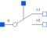

ControlledIdealCommutingSwitchControlled ideal commuting switch |

|
Information
This information is part of the Modelica Standard Library maintained by the Modelica Association.
The commuting switch has a positive pin p and two negative pins n1 and n2. The switching behaviour is controlled by the control pin. If its voltage exceeds the value of the parameter level, the pin p is connected with the negative pin n2. Otherwise, the pin p is connected the negative pin n1.
In order to prevent singularities during switching, the opened
switch has a (very low) conductance Goff
and the closed switch has a (very low) resistance Ron.
The limiting case is also allowed, i.e., the resistance Ron of the
closed switch could be exactly zero and the conductance Goff of the
open switch could be also exactly zero. Note, there are circuits,
where a description with zero Ron or zero Goff is not possible.
Please note:
In case of useHeatPort=true the temperature dependence of the electrical
behavior is not modelled. The parameters are not temperature dependent.
Parameters (5)
| useHeatPort |
Value: false Type: Boolean Description: =true, if heatPort is enabled |
|---|---|
| T |
Value: 293.15 Type: Temperature (K) Description: Fixed device temperature if useHeatPort = false |
| level |
Value: 0.5 Type: Voltage (V) Description: Switch level |
| Ron |
Value: 1e-5 Type: Resistance (Ω) Description: Closed switch resistance |
| Goff |
Value: 1e-5 Type: Conductance (S) Description: Opened switch conductance |
Connectors (5)
| heatPort |
Type: HeatPort_a Description: Conditional heat port |
|
|---|---|---|
| p |
Type: PositivePin |
|
| n2 |
Type: NegativePin |
|
| n1 |
Type: NegativePin |
|
| control |
Type: Pin Description: Control pin: if control.v > level p--n2 connected, otherwise p--n1 connected |
Used in Components (1)
|
Modelica.Electrical.Analog.Examples.Utilities Ideal switch with resistance |